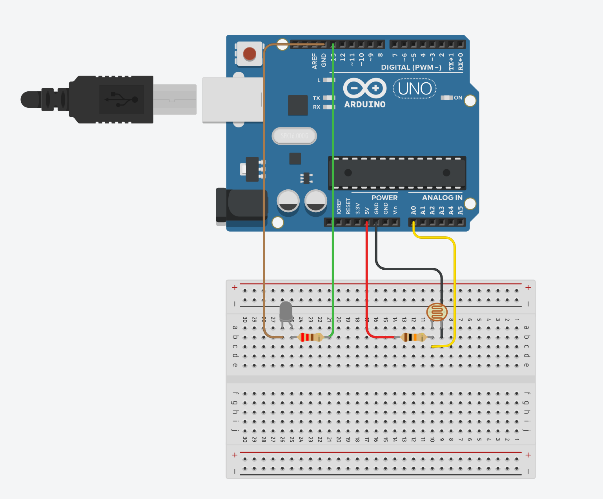

I connected the LED to digital pin 13 through a 220Ω resistor, and its other leg to ground. I chose this resistance because it is pretty standard
and I will probably always use it on LEDs.
Since the Arduino can’t directly interpret resistance (rather, it reads voltage), you need to use a voltage divider to be able to read the photoresistor.
The voltage divider will output a high voltage when the photoresistor is getting a lot of light, and a low voltage when little or no light is present.
I used a 10kΩ resistor between analog pin 0 (which the photoresistor is connected to) and ground to divide the voltage.